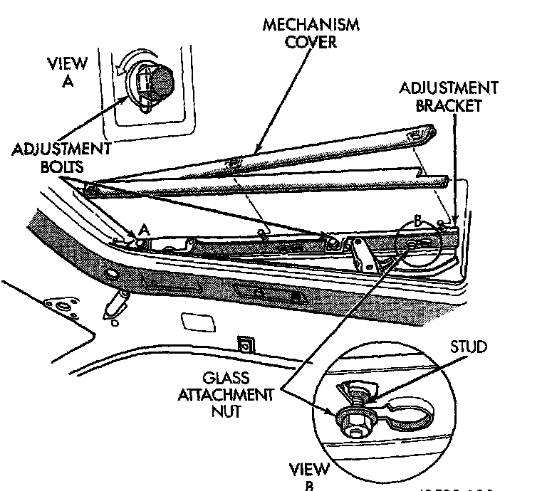

Glass Panel Vertical Height Adjustment
GLASS PANEL VERTICAL HEIGHT ADJUSTMENT
1. Open glass to vent position.
2. Slide upper half of mechanism covers rearward until clips disengage and separate covers from vehicle.

3. Close glass panel. Separately loosen adjusting bolts shown in View A and individually adjust the comers of the glass.
4. Adjust front of glass panel to 1.0 mm (0.040 in.) below top surface of roof panel.
5. Adjust rear of glass to 1.0 mm (0.040 in.) above top surface of roof panel.
6. Tighten adjustment bolts and install covers.